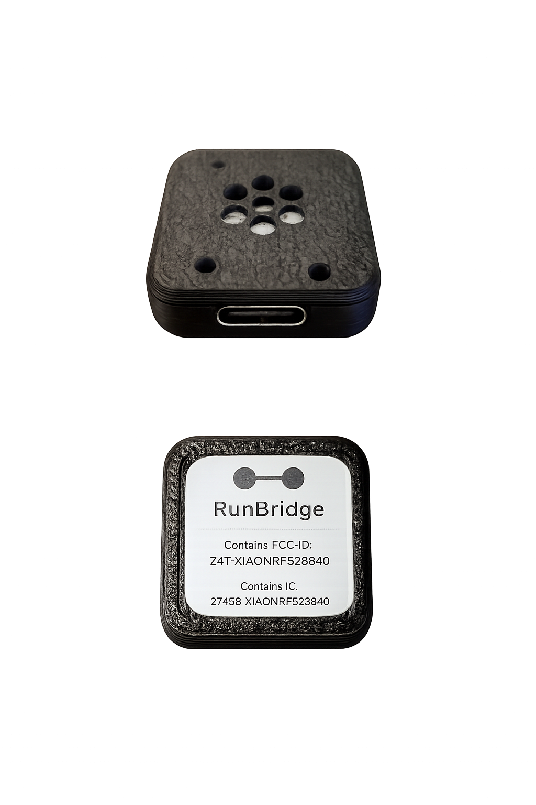

Use your treadmill's distance directly on your Garmin watch.
RunBridge is a specialized tool that reads treadmill speed and distance from Bluetooth FTMS and broadcasts it as a footpod. Get treadmill-derived pace and distance on your watch without footpod calibration or installation.

See RunBridge in Action
⚠️ Before You Buy
RunBridge is a specialized tool. Please confirm compatibility:
- ✅ My treadmill broadcasts Bluetooth FTMS.
- ✅ My Garmin watch supports pairing a footpod.
- ✅ I understand this is for FTMS treadmills only.
- Check your treadmill manual for "FTMS" or "Zwift compatibility".
- Download a BLE scanner app to see if your treadmill broadcasts.
- Read our full compatibility guide.
Quick Start
Follow these steps the first time you use RunBridge:
-
Plug in RunBridge.
Connect the USB-C port to a 5V USB power source (wall adapter, treadmill USB, or powered hub). -
Turn on your treadmill.
Make sure your treadmill console is powered and broadcasting FTMS over Bluetooth. -
Pair on your Garmin watch.
On your watch, go to Settings → Sensors & Accessories → Add New → Foot Pod (or Running Speed/Cadence) and select the device named RunBridge (or your configured name). -
Start an indoor run.
Start an Indoor Run activity. Once your treadmill session begins, pace and distance will track the treadmill's reported values during the workout.
If your watch already has another footpod paired, you may need to disable or remove it so Garmin uses RunBridge as the primary source.
Prefer a full walkthrough? See the complete quick start at Docs/QuickStart .
The XIAO nRF52840 board uses a single RGB LED to show what RunBridge is doing:
| State | XIAO nRF52840 LED |
|---|---|
| System Ready |
Solid green Watch subscribed + treadmill connected |
| Treadmill Only |
Double blink red 2 short red blinks every ~2 seconds (waiting for watch) |
| Watch Connected |
Fast blink magenta On/off every ~150 ms (watch connected, not yet subscribed) |
| Scanning |
Slow blink blue 1 second on / 1 second off (watch ready, searching for treadmill) |
| Idle / Sleep |
Off No active connections |
For a deeper technical breakdown, see Docs/LED-States .
Troubleshooting
If something isn't working, start here:
-
My watch doesn’t see RunBridge.
Make sure RunBridge is powered. If the LED is completely off, it’s idle: unplug and plug it back in, the lights should cycle, then retry Settings → Sensors & Accessories → Add New → Foot Pod. -
Treadmill distance doesn't change on the watch.
Confirm your treadmill supports FTMS over Bluetooth and that its Bluetooth is turned on. Some treadmills only broadcast once a workout has started. -
Distance on watch doesn't match treadmill.
Make sure the watch is using RunBridge as the primary footpod. If needed, temporarily disable other footpods or Stryd sensors. -
Everything is stuck / LED pattern looks wrong.
Unplug RunBridge, wait 5 seconds, and plug it back in. Then restart the activity on your watch. During a normal run you should settle into the System Ready state (solid green).
Full troubleshooting guide: Docs/Troubleshooting
Still stuck? Download your RunBridge logs and email them along with a photo of your treadmill console and LED to support@runbridge.dev.
Comparison & Compatibility
A specialized, always-ready solution for home treadmills.
| Feature | RunBridge | NPE Runn | Stryd | Zwift RunPod |
|---|---|---|---|---|
| Sensor Type | Reads FTMS speed/distance | Optical sticker | Foot accelerometer | Foot accelerometer |
| Power | USB powered | Battery / Hardwire | Battery (Recharge) | Battery (Replaceable) |
| Installation | Plug & Play USB | Install on Deck | Clip to Shoe | Clip to Shoe |
| Price | $59.99 | ~$99 | ~$219+ | ~$40 |
Tested & Confirmed:
- Assault Runner Pro + Garmin Fenix 7
Likely Compatible (Not Guaranteed):
- Any treadmill broadcasting standard Bluetooth FTMS.
- Any Garmin watch supporting the "Foot Pod" sensor type.
Note: We cannot guarantee compatibility with every treadmill/watch combination. Please use the compatibility guide to check your gear before purchasing.
FAQ
Support & Policies
RunBridge is a small-batch, hand-assembled hardware product. Every unit is powered on and function-checked before it ships.
- Support: Email support at support@runbridge.dev. Response time typically 24-48 hours.
- General questions: hello@runbridge.dev
- Returns: If RunBridge does not work with your treadmill/watch combination, contact support within 14 days of delivery (see Terms).
- Warranty: RunBridge is provided “as-is” (see Terms). Every unit is powered on and function-checked before it ships.
Full text: Docs/Support-and-Policies
RunBridge is not affiliated with or endorsed by Garmin, Assault, or any treadmill manufacturer. Always use caution when training on any exercise equipment.